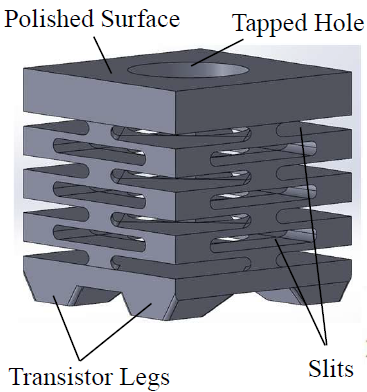
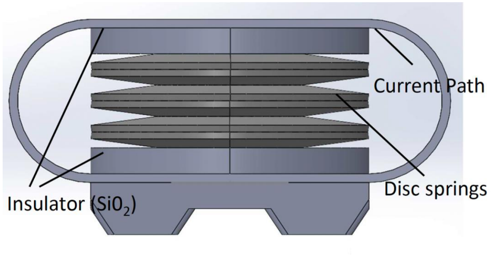
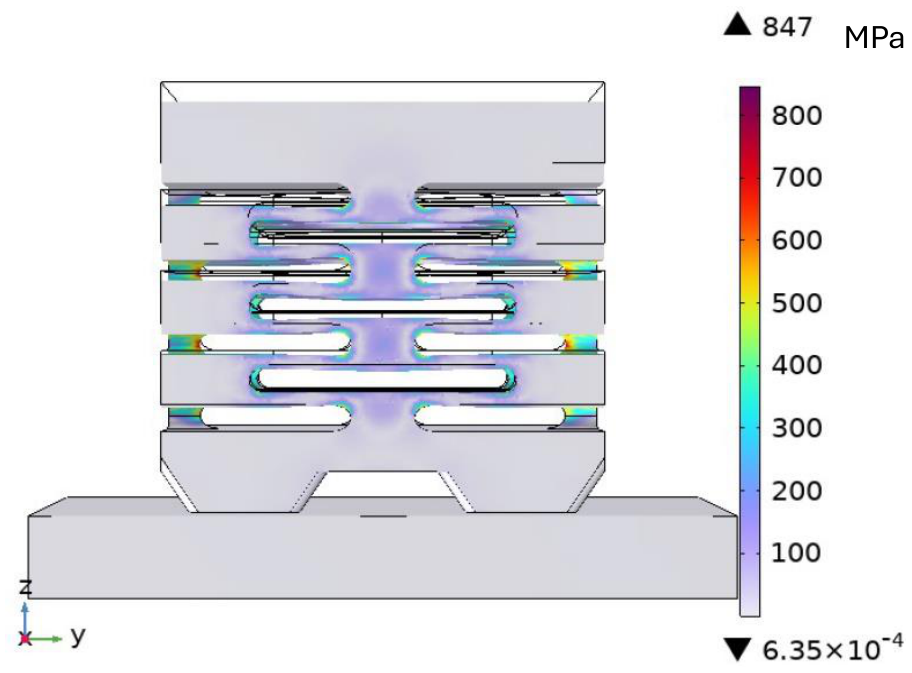
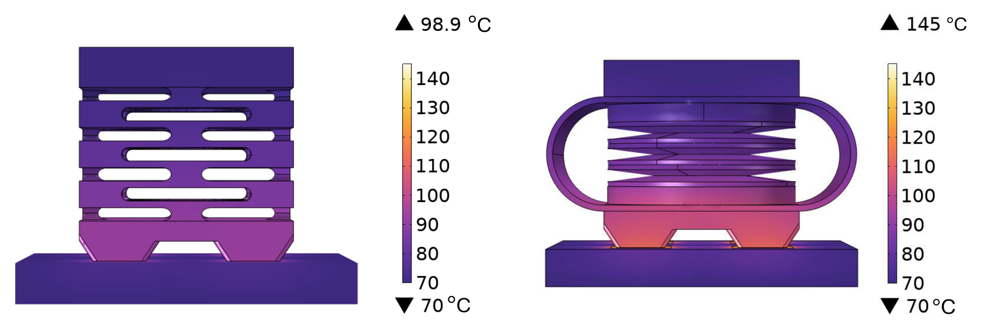
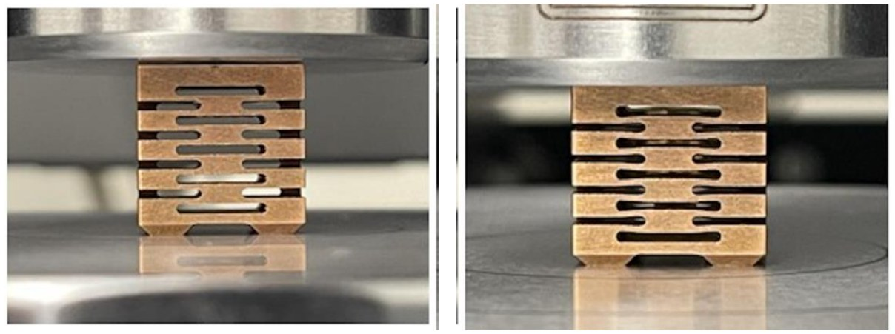
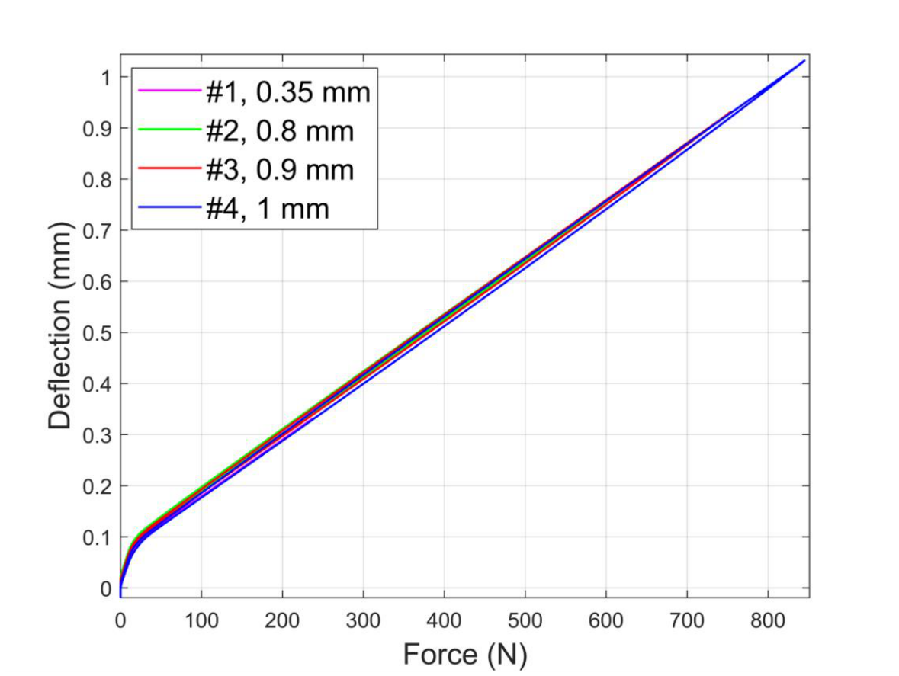

A monolithic spring for high-frequency press-pack SiC power modules
The problem
Press-pack modules clamp their semiconductor dies between electrodes with springs instead of solder, so the module can be cooled from both faces and a failed device fails short, which series-connected converters need. The benchmark design, Hitachi's StakPak IGBT module, presses each chip with a stack of stainless-steel disc springs, and that stack is the weak point once the switch is a SiC FET. A single steel disc deflects very little, so many are stacked and the module grows tall and heavy. Steel conducts poorly, so copper current paths are patched in around the stack, adding two dry-contact surfaces to every current path. Heat crossing the stack sees only about 14% of the conductivity of the baseplate because of the air between the discs. And the stack's 150 to 300 nH of stray inductance is tolerable at the 1 kHz switching of an IGBT but not for a SiC FET switching ten times faster. SiC dies are also a half to a fifth the size of IGBT chips, too small to press-contact reliably at all.
The design
I replaced the whole stack with one block of beryllium-copper, an alloy rated to about 1200 MPa against roughly 200 MPa for stainless steel and, being more than 97% copper, conducts heat and current almost like pure copper. Seven layers of laser-cut slits, each layer rotated 45 degrees from the one below so that the slits open on the corners, turn the block into a spring with a chosen stiffness. A through-hole down the center adds deflection and removes mass without adding resistance or inductance. Four silver-coated legs on the bottom are sintered straight onto the SiC source pads, so the spring is also the conductor and the heat path, and a polished top with a tapped hole bolts to the lid. Bonding the spring to the dies also evens out their junction temperatures and adds thermal capacitance that smooths the temperature swing under a short-circuit fault.
Optimizing the slits
With the footprint, the layer count, the through-hole, and the 650 N clamping force fixed by the module, three dimensions were left to choose: the slit width w, the slit height h1, and the gap h2 between slit layers. Every candidate had to keep the peak body stress below 1000 MPa, a margin under the yield strength to absorb manufacturing imperfections, and deflect more than 0.7 mm so that tolerances would not change the clamping force. Within that, the goal was the shortest spring with the lowest AC resistance and stray inductance. I drove COMSOL Multiphysics from MATLAB through LiveLink, first sweeping the design space in 0.05 mm steps, w from 5.3 to 9.1 mm, h1 from 1 to 2 mm, and h2 from 0.5 to 1 mm, to map how stress and deflection move with each dimension, then searching it with particle swarm optimization, where each particle's fitness is one finite element solve of a cost that combines the spring-constant error, the AC resistance, the stray inductance, and a penalty for exceeding the stress limit. The chosen point, w = 8.7 mm, h1 = 1 mm, h2 = 0.5 mm, gives a 16 mm tall spring that deflects 0.733 mm at 650 N with a peak stress of 874.7 MPa, concentrated at the slit ends, and presses the dies at a uniform 7.7 MPa.
To measure the gain, I modeled the disc-spring module it replaces to the same targets, with CDM 168204 discs, an insulator to keep current out of the stack, and copper current paths around it, and ran both through the same electrical and thermal simulations, the thermal case with a constant heat load on each die and both faces of the module held at 70 °C as the cooling boundary. The monolithic spring's dies peak at 98.9 °C against 145 °C for the disc-spring module, 46.1 °C cooler, because heat leaves through a solid copper body whose slits add surface area instead of through the edges of steel discs.
| Quantity | Monolithic spring | Disc-spring module |
|---|---|---|
| DC resistance | 148 µΩ | 856.1 µΩ |
| AC resistance at 20 kHz | 224.5 µΩ | 987.1 µΩ |
| Stray inductance | 2.8 nH | higher, through the insulated stack |
| Peak die temperature, thermal FEA | 98.9 °C | 145 °C |
| Deflection at 650 N | 0.733 mm | set by the number of discs |
On the bench
Five prototypes were laser-cut from beryllium-copper. On an Instron 5966 frame I loaded one to deflection limits of 0.35, 0.8, 0.9, and 1.0 mm in turn. At the smallest loads the force-deflection curve is nonlinear, the signature of the manufacturing imperfections, and beyond that the spring is linear and repeatable; the body stress stayed under the 1035 MPa strength limit used for the alloy throughout, and the part recovered its shape after every run. The prototypes were cut to a design point inside the swept range rather than to the final optimum, and they came out stiffer than their model: for that geometry COMSOL had predicted 1.46 mm of deflection at 650 N, and the part gave 0.81 mm, a spring constant about 80% above the simulated value. That is usable for this module, since a higher clamping force lowers the contact resistance of the dies up to a limit, and it is the gap the next design iteration has to close. With aluminum plates clamped to both ends, an RLC meter read 192 µΩ of DC resistance and 6.3 nH of stray inductance against the simulated 148 µΩ and 2.8 nH, the same order and still far below the disc-spring stack, with some allowance for measurement error. The work is published as two IEEE ECCE papers, two U.S. patent applications on which I am a co-inventor, and my MS thesis, which is open access.
Mathematical background
- Finite element analysis of coupled structural, electrical, and thermal fields
- Elastic and plastic deformation, yield strength margins, and stress concentration at the slit ends
- Design-space scanning and particle swarm optimization with a penalized cost function
- Skin effect and stray inductance at switching frequencies of 20 kHz





